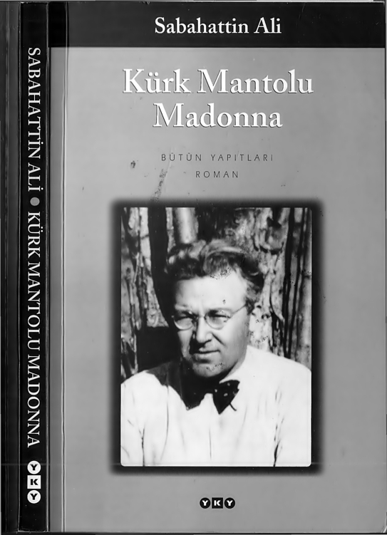

KURK MANTOLU MADONNA
Sabahattin Ali 25 Şubat 1907'de Gümülcine'de doğdu, 2 Nisan 1948'de Kırklareli'nde öldü. İstanbul İlköğretmen Okulu'nu bitiren Sabahattin Ali, Yozgat'ta bir yıl öğretmenlikten sonra, 1928 yılında Milli Eğitim Bakanlığı'nca Almanya'ya gönderildi. 1930'da döndükten sonra Aydın, Konya ve Ankara ortaokullarında Almanca öğretmenliği, Milli Eğitim Bakanlığı Yayın Müdürlüğü'nde memurluk ve Devlet Konservatuvarı'nda dramaturgluk yaptı. 1945'te Bakanlık emrine alındı, İstanbul'da Markopaşa adlı mizah gazetesini çıkardı. 1948'de bir yazısı yüzünden tutuklandı, üç ay kadar hapis yattı. Sürekli izlendiği için yurtdışına kaçmak istedi, ancak Kırklareli dolaylarında bir kaçakçı tarafından öldürüldüğü iddia edildi.
Şiirler, hikâyeler, romanlar yazdı, çeviriler yaptı. İlk yazıları Balıkesir'de Irmak dergisinde çıkmıştı (1925/26). Sabahattin Ali 1930'lu yıllarda öyküye gerçekçi ve yeni bir soluk getirmişti. Öykülerinde; tanımlamakta güçlük çektiğimiz kimi duyguları ustalıkla anlatan Ali, insanın zavallılığını ve gücünü aynı sarsılmaz üslupla, zaman zaman masalsı ve destansı bir biçimde yansıtmayı başarmıştı. Öykü kitapları: Değirmen (1935), Kağnı (1936), Ses (1937), Yeni Dünya (1943), Sırça Köşk (1947). Halk şiirinden esinlenerek yazdığı şiirlerini Dağlar ve Rüzgâr'da toplamıştı (1934). Sabahattin Ali, romanlarında da insanın ruhuna ayna tuttu ve gerçeğe bu aynadan baktı.
Kuyucaklı Yusuf (1937), İçimizdeki Şeytan (1940), Kürk Mantolu Madonna (1943) adlı romanlarında, okurların gerçekliği daha derinden algılamasını sağladı. Sağlığında yayımlanmış dokuz kitabına, Varlık dergisinde tefrika edilen Esirler (1936) oyunu da eklenince on kitabı, yedi ciltlik bir külliyat halinde Varlık Yayınları arasında tekrar basılmıştı (1965/66). Bütün Eserleri önce Bilgi Yayınevi'nde, sonra Cem Yayınevi'nde yeniden basıldı. Bu arada Hikmet Altınkay-nak'ın Sabahattin Ali-Markopaşa Yazıları ve Ötekiler (1987) derlemesi de adı geçen dizide çıktı. Yazar üzerine incelemeler arasında Kemal Sülker'in Sabahattin Ali Dosyası (1968), Asım Bezirci'nin Sabahattin Ali/Hayatı, Hikâyeleri, Romanları (1974), Kemal Bayram'm Sabahattin Ali Olayı (1978), Filiz Ali Laslo ile Atilla Özkırımlı'nın Sabahattin Ali (1979), Reşit M. Ertüzün'ün Sabahattin Ali Olayının Gerçeği (1985), Filiz Ali'nin "Filiz Hiç Üzülmesin" (1996), Ramazan Korkmaz'ın Sabahattin Ali (1997) adlı kitapları ve Almanya'da yayımlanan Elisabeth Siedel'in Sabahattin Ali Mystiker und Sozialist adlı çalışması sayılabilir.
Sabahattin Ali'nin
YKY'deki öteki, kitapları:
Bütün Öyküleri I ( 1997 )
Bütün Öyküleri II ( 1997 )
içimizdeki Şeytan ( 1998 )
Markopaşa Yazıları ve Ötekiler (1998)
Kuyuçaklı Yusuf (1999)
Bütün Şiirleri (1999)
Çakıcı'nın İlk Kurşunu (2002)